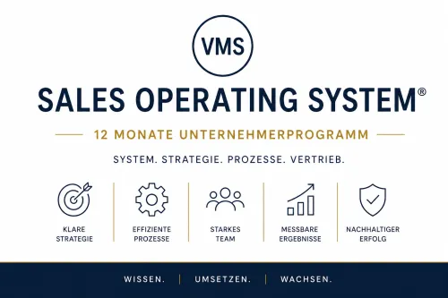

Bluesharp lernen - Melodiespiel und Bluesharptechniken ...
Produktprofil · Marktplatz-Daten 2026-10-14 · Verkaufsseiten-Recherche 2026-10-14 · Kategorien: Dancing & Music
- Bluesharp lernen - Melodiespiel und Bluesharptechniken ... ist ein/e Mitgliederbereich & Videokurs in Dancing & Music, vertrieben über den Digistore24-Marktplatz von Anbieter Activent, gelistet seit 2017-03-12.
- Listenpreis $140.94 (subscription) — Checkout, Auslieferung und Rückerstattungen laufen über Digistore24 selbst, nicht über den Anbieter.
- Käuferschutz: keine standardisierte Garantie-Formulierung gefunden — Rückerstattungsbedingungen vor der Zahlung auf der offiziellen Seite prüfen.
Interesse an Bluesharp lernen - Melodiespiel und Bluesharptechniken ...? Aktueller Preis, Boni und Garantiebedingungen finden Sie auf der offiziellen Seite des Anbieters:
Offizielle Verkaufsseite ansehen
Affiliate-Link (Werbung) — wir verdienen ggf. eine Provision, ohne Mehrkosten für Sie.

Marktplatz-Daten
| Produkttyp | Mitgliederbereich & Videokurs |
|---|---|
| Preis | $140.94 (Subscription) |
| Garantie/Rückgabe | Laut Verkaufsseite des Anbieters — vor dem Kauf auf der offiziellen Seite prüfen |
| Anbieter | Activent (gelistet seit 2017-03-12) |
Marktplatz-Beschreibung des Anbieters
Spielen Sie Bluesharp in 1 - 4 Wochen - garantiert (selbst wenn Sie noch nie ein Instrument gespielt haben) Kein Risiko! Monatlich kündbar (bei monatlicher Zahlung) Teste 14 Tage lang für 1 €. Wenn dir mein Bluesharpkurs gefällt, dann brauchst du nichts weiter zu tun. Danach bezahlst du dann lediglich pro Monat 15 € (für die ganze Familie) und du kannst jederzeit, wie angegeben kündigen. So hast du also keinerlei Risiko! Du möchtest genau wissen, wie du Bluesharp lernen kannst? Du möchtest gerne Bluesharp spielen lernen von einem Profi , der Musik studiert hat? Du hast keine Lust, einfach mal so herumzuprobieren? Du möchtest Flow erleben und dich entschleunigen ? Du möchtest gerne auswendig spielen lernen? Du möchtest lernen, wie man einen schönen Ton auf der Bluesharp bildet? Du möchtest lernen, wie du deine Atemtechnik verbesserst? Du möchtest erfahren, wie man eine Melodie so interpretiert , dass es alle vom Hocker haut? Du möchtest vorspielen ? Du möchtest eventuell mal anderen das Bluesharpspielen beibringen und meinen Bluesharpkurs dabei weiterempfehlen und Geld verdienen ? Meinen Bluesharpkurs habe ich für meien Schüler entwickelt und sie spielen schon nach wenigen Wochen die ersten Lieder. So kannst du davon ausgehen, dass, wenn sogar meine Schüler an einer Schule begeistert sind, dann bist du das allemal. In diesem Onlinekurs sind mehrere Hundert Lieder . Neben dem Melodiespiel zeige ich dir auch, wie man Blues spielt, Spieltechniken wie Bending, Bluesspiel, Improvisation und Harmonielehre mit der Bluesharp Du kannst auf über 5000 Videoplaybacks in verschiedenen Geschwindigkeiten zugreifen. In Videoanleitungen zeige ich dir, wie du Bluesharp spielen kannst. Du erhälst die Lieder mit Noten und Zahlen , so dass jeder, auch Anfänger Bluesharp auch ohne Notenkenntnisse lernen kann. Es gibt 2 Zahlungsarten: 1. Monatlich (monatlich kündbar zum Ende des bez. Zeitraums) 2. Jährlich (jährlich kündbar, zum Ende des bez. Zeitraums) Nach der Bezahlung hast du SOFORT Zugriff auf meinen Mundharmonikakurs. Du kannst also gleich loslegen. Dieser Onlinekurs wird ständig weiterentwickelt, so dass du auch eigene Wünsche einbringen kannst, die ich nach Möglichkeit dann umsetze. Dieser Bluesharpkurs ist sehr umfassend und jeder kann von Beginn an (ohne Notenkenntnisse) Bluesharp spielen. Alter: Ab 6 - 100 Jahre! Dieser Bluesharpkurs ist auch für Musikhäuser , Onlineshops (Musik) usw. geeignet, die mehr Bluesharps verkaufen wollen und die an der Vermittlung dieses Bluesharpkurses monatlich Geld verdienen wollen. Bluesharp spielen macht Spaß und ist ganz einfach. Vor allem die Videoplaybacks und die regelmäßigen Webinare sind nahezu eine Garantie dafür, dass jeder lange gerne mit meinem Bluesharpkurs Bluesharp spielt. Ich zeige auch dabei neben der entsprechenden Atemtechnik , Haltung usw auch, wie man Lieder interessant interpretiert , wie man auswendig spielen kann (trainiert das Gehirn) und wie man im Flow sielt. Daher ist dieser Bluesharpkurs auch für alle, die sich entschleunigen wollen, die Flow erlernen wollen und auch für Leute, die Burnout-Probleme haben. Schon ab 10 Minuten täglich hat man in kurzer Zeit schon richtige Erfolge und kann vorspielen. Überraschen Sie Ihre Freunde und Bekannte beim nächsten Treffen mit schönen Liedern und zur Weihnachtszeit spielen Sie auf einmal mit der Bluesharp vor. Dieser Onlinekurs darf für alle Famlienmitglieder verwendet werden. Jede Familie zahlt also nur einen Zugang. Dieser Bluesharpkurs ist auf auf monatlicher Basis oder jährlicher Basis. Dies bedeutet: Es gibt für jeden, der diesen Bluesharpkurs weiterempfiehlt, regelmäßig Provisionen. Ich entwickle diesen Bluesharpkurs ständig weiter. Viel Spaß beim Bluesharp Spielen und beim Empfehlen! Marketing: Für Affiliates biete ich an, dass wir zusammen für Ihre Kontakte ein Webinar (oder mehrere) machen, damit sie sich in diesen Mundharmonikakurs über Ihren Affiliatelink eintragen. Da dieser Bluesharpkurs sehr umfassend ist und ständig weiterentwickelt wird und da ich durch meine Live-Webinare eine gute Kundenbindung aufbauen möchte, können Affiliates durch die Vermittlung meiner Onlinekurse durch monatliche oder jährliche Beiträge lange für sich finanziell profitieren. Sie können auch meinen Mundharmonikakurs "Mundharmonika spielen - Melodiespiel mit Noten empfehlen.
Von der Verkaufsseite des Anbieters
Seitentitel: Home - Bluesharplernen.com
Hauptüberschrift
Bluesharp lernen - mit Wilfried Bechtle - Musiklehrer und Mundharmonika-Experte - ist es ganz einfach
€1,00
€1,00
Abschnitts-Überschriften
- "Bluesharp lernen leicht gemacht: Für Anfänger und Fortgeschrittene - Spiele bald deine Lieblingssongs!"
- Über den Autor:
- Interview mit Wilfried Bechtle
- Melde dich jetzt an!
Einstiegstext
Über 15 Jahre Erfahrung mit Klassenmusizieren an einer Realschule - Kurse wurden praxisnah mit Schüler entwickelt.
Mit über 600 Lektionen pro Kurs mit Videoanleitungen, Videoplaybacks in verschiedenen Geschwindigkeiten usw. Einzelunterricht ist auch online möglich.
Wilfried Bechtle ist ein Mundharmonikaspieler mit einer klassischen Ausbildung. Er hat bei sehr guten Mundharmonikadozenten und - Lehrern gelernt
Während seines Studiums für das Lehramt für Musik und Deutsch studierte er auch zusätzlich bei:
Fragen, die die Verkaufsseite beantwortet
- Was war der Auslöser, dass du mit der Mundharmonika angefangen hast?
- Ich wollte mich mit meiner Gitarre auf der Mundharmonika begleiten so wie es z. B. Bob Dylan tat. Was ist das Besondere an der Mundharmonika?
- Was ist dein Lieblingsstück, das du auf der Mundharmonika spielst?
- Was sind deine Ziele als Mundharmonikaspieler?
- Welche Tipps hast du für Menschen, die Mundharmonika lernen möchten?
Recherche-Methode: rohes HTML · 878 Wörter · Qualität: rich · recherchiert am 2026-10-14. Vollständige Recherche-Datei (MD) ↗
Wie Produkte dieser Art geliefert werden
Allgemeiner Hinweis zu diesem Produkttyp (keine anbieterspezifische Anleitung): Videokurse laufen über einen Mitgliederbereich: nach dem Checkout erhalten Sie Zugangsdaten per E-Mail und können die Lektionen in Ihrem eigenen Tempo streamen. Für die genaue Anwendung von Bluesharp lernen - Melodiespiel und Bluesharptechniken ... sind die offizielle Verkaufsseite und die enthaltenen Materialien maßgeblich.
Weitere Bilder (von der Verkaufsseite des Anbieters)
Bilder stammen von der offiziellen Verkaufsseite des Anbieters und zeigen das Produkt, wie es beworben wird.
Gut zu wissen
- Keine Garantie-Formulierung in unserer Recherche gefunden — bestätigen Sie das Rückgabefenster auf der offiziellen Seite, bevor Sie kaufen.
- Hinweise der Verkaufsseite (wörtlich, nicht von uns geprüft): „Ich habe im Alter von 13 Jahren einen Blues-Song im Radio gehört, in dem die Mundharmonika eine wichtige Rolle spielte. Das hat mich sofort fasziniert. Ich habe mir dann eine Mundharmonika gekauft und angefangen, mir selbst Mundharmonika beizubringen. Ich wollte mich mit meiner Gitarre auf der Mundharmonika begleiten so wie es z. B. Bob Dylan tat."
- Hinweise der Verkaufsseite (wörtlich, nicht von uns geprüft): „Das Wichtigste ist, dass man sich Zeit nimmt und geduldig ist. Die Mundharmonika ist ein Instrument, das man nicht von heute auf morgen lernt. Man muss viel üben und sich nicht entmutigen lassen, wenn es am Anfang nicht so gut klappt."
Was ist Bluesharp lernen - Melodiespiel und Bluesharptechniken ...?
Bluesharp lernen - Melodiespiel und Bluesharptechniken ... ist ein/e mitgliederbereich & videokurs in der Kategorie Tanzen & Musik des Digistore24-Marktplatzes, veröffentlicht von Anbieter Activent und im Verkauf seit 2017-03-12. Der Anbieter beschreibt es so: "Spielen Sie Bluesharp in 1 - 4 Wochen - garantiert (selbst wenn Sie noch nie ein Instrument gespielt haben) Kein Risiko! Monatlich kündbar (bei monatlicher Zahlung) Teste 14 Tage lang für 1 €. Wenn dir mein Bluesharpkurs gefällt, dann brauchst du nichts weiter" (Marktplatz-Beschreibung des Anbieters, leicht gekürzt).
Bluesharp lernen - Melodiespiel und Bluesharptechniken ... Preis: was Sie zahlen
Der Marktplatz listet Bluesharp lernen - Melodiespiel und Bluesharptechniken ... zum $140.94 Preis (subscription). Digistore24 fügt im Checkout die gesetzliche Steuer Ihres Landes hinzu — dort sehen Sie den Endbetrag vor der Zahlung. Eine separate Plattformgebühr gibt es nicht; Anbieter können eigene Upsells nach dem Checkout anbieten.
Bluesharp lernen - Melodiespiel und Bluesharptechniken ... Rückerstattung und Geld-zurück-Garantie
Wir haben keine standardisierte Garantie-Formulierung auf der Verkaufsseite gefunden. Rückerstattungen für Digistore24-Käufe laufen über die Plattform: Antrag über den Support-Link in Ihrer Bestell-E-Mail, innerhalb des Garantiezeitfensters, das im Checkout angezeigt wird. Praktischer Rat: Entscheiden Sie innerhalb des Fensters — wenn das Produkt unter den Erwartungen bleibt, erstatten lassen statt irren lassen.
Mechanik im Detail: So funktionieren Digistore24-Rückerstattungen.
Für wen ist Bluesharp lernen - Melodiespiel und Bluesharptechniken ... geeignet?
Basierend auf der Tanzen & Musik-Einordnung und der subscription-Abrechnung richtet sich Bluesharp lernen - Melodiespiel und Bluesharptechniken ... an Käufer, die tanzen & musik-Lösungen suchen und ein Budget für einen Premium-Kauf eingeplant haben. Der ehrliche Test ist nicht die Kategorie, sondern Ihre eigene Situation: Werden Sie es realistisch innerhalb des Garantiefensters nutzen? Wenn ja, ist der Preis eine Investition; wenn nein, ist er Ballast — unabhängig von der Qualität.
Ist Bluesharp lernen - Melodiespiel und Bluesharptechniken ... seriös? Was Sie vor dem Kauf prüfen
Wir bewerten keine Seriosität — das kann niemand, ohne das Produkt zu nutzen. Prüfbare Punkte, alle auf dieser Seite: die Marktplatz-Historie des Anbieters (im Verkauf seit 2017-03-12), die wörtlichen Verkaufsseiten-Auszüge unten (gekennzeichnet als Anbieteraussagen — deren Werbung, nicht unsere Empfehlung), die Garantiebedingungen im Checkout und die Auslieferungsart. Vorsichtsignale bei jedem Angebot: Countdown-Dringlichkeit gepaart mit vagen Rückerstattungsbedingungen, Testimonials ohne Datum und Anbieterseiten, die den Preis bis zum Checkout verstecken.
Wie kommen Sie nach dem Kauf an Bluesharp lernen - Melodiespiel und Bluesharptechniken ...?
Der Checkout läuft über Digistore24. Nach der Zahlung: Videokurse laufen über einen Mitgliederbereich: nach dem Checkout erhalten Sie Zugangsdaten per E-Mail und können die Lektionen in Ihrem eigenen Tempo streamen. Bewahren Sie die Bestell-E-Mail auf — sie ist Ihr Schlüssel zum/d zur mitgliederbereich & videokurs, zu Rückerstattungsanträgen und zum Digistore24-Käufersupport.
Bluesharp lernen - Melodiespiel und Bluesharptechniken ... Erfahrungen: so recherchieren Sie richtig
Die meisten „Erfahrungsberichte" zu Marktplatz-Produkten sind Affiliate-Inhalte — einschließlich Seiten wie dieser, die an Käufen mitverdienen. Behandeln Sie jeden Bericht (auch unseren) als Ausgangspunkt und prüfen Sie gegen Primärquellen: die Verkaufsseite des Anbieters, die Digistore24-Rückerstattungsrichtlinie und — für tanzen & musik — unabhängige Communities außerhalb des Affiliate-Ökosystems. Auf dieser Seite sind die Verkaufsseiten-Auszüge unten wörtlich zitiert, damit Sie die Aussagen des Anbieters bewerten können, ohne wegzuklicken.
Wie Sie Bluesharp lernen - Melodiespiel und Bluesharptechniken ... sicher kaufen
- Öffnen Sie die offizielle Verkaufsseite und lesen Sie das vollständige Angebot.
- Bestätigen Sie Endpreis und Garantiezeitfenster auf der Digistore24-Kassenseite — sie ist bindend, kein Vergleichsportal.
- Zahlen Sie innerhalb des Digistore24-Checkouts (niemals per Überweisung oder Off-Platform-Links).
- Speichern Sie die Bestellbestätigung; notieren Sie die Rückerstattungsfrist im Kalender.
- Prüfen Sie zügig. Der Digistore24-Käufersupport hilft, wenn der Anbieter nicht reagiert.
Vollständiges Recherche-Archiv für dieses Produkt (Markdown: kompletter Marktplatz-Datensatz + wörtliche Verkaufsseiten-Auszüge): Bluesharp lernen - Melodiespiel und Bluesharptechniken ... — vollständiges Datenarchiv (Markdown-Datei: 15571-bluesharp-lernen-melodiespiel-und-bluesharptechniken.md).
- Listenpreis & Abrechnung — Quelle: offizielle Digistore24-Marktplatz-API, Stand 2026-10-14. Maßgeblich für den aktuellen Preis ist immer die Kassenseite.
- Verkaufsseiten-Zitate — Quelle: https://www.bluesharplernen.com/, abgerufen 2026-10-14 (Methode: rohes HTML). Verify: offizielle Seite öffnen.
- Garantie / Rückgabe — vom Anbieter festgelegt; vor dem Kauf auf der Verkaufsseite bestätigen.
- Nicht von uns geprüft: Produktqualität, Ergebnisse, Testimonials — kein Praxistest für dieses Listing durchgeführt.
Häufige Fragen zu Bluesharp lernen - Melodiespiel und Bluesharptechniken ...
Antworten aus dem Marktplatz-Snapshot (2026-10-14) und der Verkaufsseiten-Recherche (2026-10-14); Anbieteraussagen sind inline gekennzeichnet.
Was ist Bluesharp lernen - Melodiespiel und Bluesharptechniken ...?
Bluesharp lernen - Melodiespiel und Bluesharptechniken ... ist ein Angebot des Typs „Mitgliederbereich & Videokurs" im Digistore24-Marktplatz, Anbieter: Activent, gelistet seit 2017-03-12. Eingepflegt unter Tanzen & Musik. Digistore24 wickelt Checkout, Lieferung und Rückgaben ab.
Wie viel kostet Bluesharp lernen - Melodiespiel und Bluesharptechniken ...?
Der Digistore24-Marktplatz listet es für $140.94 (subscription). Preise legt der Anbieter fest und können sich ändern — der Marktplatz-Eintrag oben zeigt den Schnappschuss; die offizielle Verkaufsseite zeigt den aktuellen Preis.
Gibt es eine Geld-zurück-Garantie für Bluesharp lernen - Melodiespiel und Bluesharptechniken ...?
Unsere Verkaufsseiten-Recherche hat keine explizite Garantie-Formulierung gefunden. Viele Digistore24-Produkte bieten 60 Tage Geld-zurück, aber das legt jeder Anbieter selbst fest — bestätigen Sie es auf der offiziellen Verkaufsseite, bevor Sie kaufen.
Ist Bluesharp lernen - Melodiespiel und Bluesharptechniken ... seriös?
Wir bewerten keine Seriosität — wir veröffentlichen überprüfbare Zahlen: Anbieter Activent (gelistet seit 2017-03-12), mit der vollständigen Verkaufsseiten-Recherche archiviert auf dieser Seite (Anbieteraussagen als solche gekennzeichnet). Lesen Sie unsere 6-Punkte-Bewertungsmethode und entscheiden Sie anhand der Zahlen — oder diskutieren Sie Bluesharp lernen - Melodiespiel und Bluesharptechniken ... auf GitHub.
Wo kann ich Bluesharp lernen - Melodiespiel und Bluesharptechniken ... sicher kaufen?
Nur über die offizielle Verkaufsseite, die auf dieser Seite verlinkt ist (Checkout und Rückgaben laufen über Digistore24). Prüfen Sie dort Preis und Garantie vor der Bestellung. Der Link ist ein Affiliate-Link — der Kauf unterstützt diese Website ohne Mehrkosten für Sie.
Wie erhalte ich Bluesharp lernen - Melodiespiel und Bluesharptechniken ... nach der Zahlung?
Der Checkout läuft über Digistore24: Nach der Zahlung erhalten Sie Zugangsdaten und Ihr Abo-Dashboard. Lieferdetails für diesen Produkttyp: Videokurse laufen über einen Mitgliederbereich: nach dem Checkout erhalten Sie Zugangsdaten per E-Mail und können die Lektionen in Ihrem eigenen Tempo streamen. Bei Problemen kann der Digistore24-Käufersupport Ihre Bestellung wiederherstellen.
Alle 50 Käuferfragen zu Tanzen & Musik — das komplette Kategorie-FAQ.
Bluesharp lernen - Melodiespiel und Bluesharptechniken ... auf Reddit diskutieren
In Community-Threads vergleichen echte Käufer Erfahrungen. Wir verlinken Communities, keine einzelnen Posts — Threads verschwinden, Subreddits bleiben:
- Reddit-Suche nach „Bluesharp lernen - Melodiespiel und Bluesharptechniken ..." — Live-Ergebnisse, von uns nicht beeinflusst.
- Top-„Erfahrungs"-Treffer dieses Jahr — selbst nach Aktualität filtern.
Passendes auf Amazon.de
Physische Produkte und Zubehör, die häufig zusammen mit Bluesharp lernen - Melodiespiel und Bluesharptechniken ... gekauft werden:
- Musik Equipment auf Amazon.de — Top-Ergebnisse, Amazon-Ranking.
- Bestseller: Musik Equipment — live Liste von Amazon, von uns nicht kuratiert.
Werbung: Als Amazon-Partner verdient DigistorePicks DE an qualifizierten Käufen (Partner-tag adminstorede-21). Amazon setzt eigene Preise und Provisionen (niedrige einstellige Prozente — weit unter den 30–75% der Digistore24-Anbieter). Amazon ist ein Convenience-Angebot für Sachprodukte, kein Ersatz für das digitale Produkt oben.
Ähnliche Angebote in Tanzen & Musik

Die Party DJ Setbook Business ENTERPRISE-Lizenz (B2B) richtet sich an Unternehmen, DJ-Agenturen, Veranstalter, Hotels, Clubs, Verleiher und Organisationen , die

Keyboard Videokurs für Anfänger Eine 52 wöchige Komplettausbildung für Keyboard Anfänger OHNE Vorkenntnisse NICHT DEN PROMO LINK auf der rechten Seite VERWENDEN

Keyboardkurs der 1000 Tipps für fortgeschrittene Spieler NICHT DEN PROMO LINK auf der rechten Seite VERWENDEN! >ACHTUNG! HIER KLICKEN< um auf ONLINEMUSIKS

Die Party DJ Setbook Business PRO-Lizenz (B2B) richtet sich an Unternehmen, DJ-Agenturen, Veranstalter, Hotels, Clubs, Verleiher und Organisationen , die ihren
Weitere Angebote von Activent

Sales Operating System® ist ein strukturiertes 12-Monate-Implementierungsprogramm für Unternehmer und Vertriebsteams zur systematischen Steigerung von Abschluss

Ich habe einen Onlinekurs für die Mundharmonikas Melodystar von Hohner und chromatische Mundharmonika in C erstellt. Diesen Onlinekurs habe über 15 Jahre lang m
Ähnliche Preislage in Tanzen & Musik

Empfehle die einzigartigen Produkte von www.meineMusikschule.net meineMusikschule.net - so lernt man heute Instrumente spielen ;-) Deine Vorteile: Einmal-/ und

All Styles Abos der Social Dancing Academy Die Social Dancing Academy ist die größte Online Tanzplattform im DACH-Raum und hat bereits über 1000 aktive und sehr

Gitarre Lernen in 4 Wochen Crashkurs für Einsteiger. Die professionelle Gitarrenausbildung von Georg Norberg.

Lerne Pop Piano bis zu 10x schneller Gesamtpaket: Videokurs für Einsteiger, Wiedereinsteiger und Umsteiger vom klassischen Klavierspiel über 60 frei einteilbare
Ähnliche Suchanfragen
Wo Sie es sich ansehen können
Wo Sie es sich ansehen können
Aktuelle Preise, Garantie und Boni finden Sie auf der offiziellen Verkaufsseite:
Offizielle Verkaufsseite ansehen
Das ist ein Affiliate-Link (Werbung) — kaufen Sie darüber, verdienen wir ggf. eine Provision, ohne Mehrkosten für Sie.
Quellen & weiterführende Informationen
- Offizielle Verkaufsseite (aktueller Preis, Garantie, Boni): www.bluesharplernen.com (Affiliate-Link)
- Öffentliche Digistore24-Produktseite: checkout-ds24.com/product/125203
- Vollständige Recherche-Datei (Markdown, versioniert): content/products/15571-bluesharp-lernen-melodiespiel-und-bluesharptechniken.md
- Marktplatz-Kategorie: Tanzen & Musik
Wie wir Produkte wie Bluesharp lernen - Melodiespiel und Bluesharptechniken ... bewerten
Sechs Prüfungen, ausschließlich mit offiziellen Marktplatz-Zahlen. Die vollständige Bewertungsmethode lesen · unsere Recherche-Standards & Kennzeichnung.
Fragen oder eigene Erfahrungen mit Bluesharp lernen - Melodiespiel und Bluesharptechniken ...?
Praxis-Tests veröffentlichen wir erst, nachdem wir ein Produkt selbst gekauft haben — aber Ihre Erfahrung hilft anderen Lesern: Diskussion zu Bluesharp lernen - Melodiespiel und Bluesharptechniken ... auf GitHub starten/verfolgen. Falsche Zahl gefunden? Korrektur melden — jede Seite zeigt ihre Datenstände, Korrekturen gelten für die ganze Website.